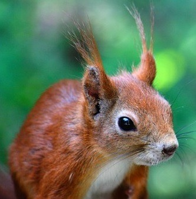
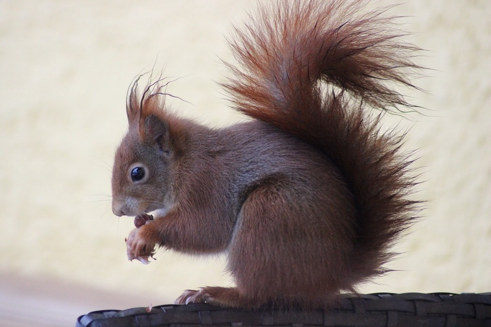

|  | Mókus |
Európai mókusAz európai mókus, közönséges erdeimókus vagy vörös mókus (Sciurus vulgaris) az emlősök (Mammalia) osztályának rágcsálók (Rodentia) rendjébe, ezen belül a mókusfélék (Sciuridae) családjába tartozó faj. A népi nyelvben nevezik cibókának, evetnek vagy kelempájsz madárnak is. ElőfordulásaÉlőhelye Európában és Ázsiában sávszerűen-délen a Földközi-tengerig, északon Észak-Skandináviáig, keleten pedig Kínáig és Koreáig terjed. Angliában a keleti szürkemókus kiszorította élőhelyéről. Csak Skóciában maradt egy kis európaimókus-kolónia, amely tulajdonképpen egy alfaj. Magyarországon közönséges. Megjelenése
A téli bunda a nyárinál vastagabb, sötétebb és szürkébb; a fülön levő szőrpamacs is sokkal hosszabb. Bundájában a barna árnyalatai uralkodnak, bár színezete a mély feketés-barnától az egészen világos vörösesbarnáig terjedhet. Hasi oldala mindig világos; a színváltozatok előfordulása az élőhelytől függ. Lombos erdőkben és városi parkokban, ahol a tűlevelűek aránya kicsi, a vörösesbarna típus az uralkodó , míg a fenyőerdőkben szinte kizárólag csak feketés- vagy sötétbarna példányok találhatók. Színezetük mindig a környezetbe való beleolvadást segíti elő. A sötét fenyőerdőben a sötétbarna mókus sokkal kevésbé tűnik fel, mint a rókavörös, és fordítva. Úgy tűnik azonban, hogy a színkülönbségek a mikroklímával is összefüggésben állnak. Mivel a vörös és vörösesbarna mókus elsősorban a melegebb és szárazabb, míg a sötétbarna a hidegebb és nedvesebb élőhelyekre jellemző, így nem kizárólag a ragadozók miatt alakul ki az uralkodó színváltozat. A különböző típusok néha egymás mellett is előfordulnak. A tapintószőrök hosszúak és érzékenyek; a mókusnak ezenkívül még a mellső mancsán, hasán és faroktövénél is vannak érzékeny tapintó szőrszálai. A farok az ágak közti ugráláskor és mászáskor egyensúlyozásra, éjjel „takaróként” szolgál; a farokmozgás tükrözi a mókus hangulatát. A látása nagyon fejlett; mivel a mókus elsősorban faágak között mozog, nagy látótérrel rendelkezik, színlátása is fejlett. Kis súlya lehetővé teszi, hogy a fa koronájának külső részein és a vékony gallyakon is biztonságosan közlekedjen. Kiáltása: „csukk, csukk”. |
|
| Forrás: Wikipedia | További érdekességek: Vadonleső |